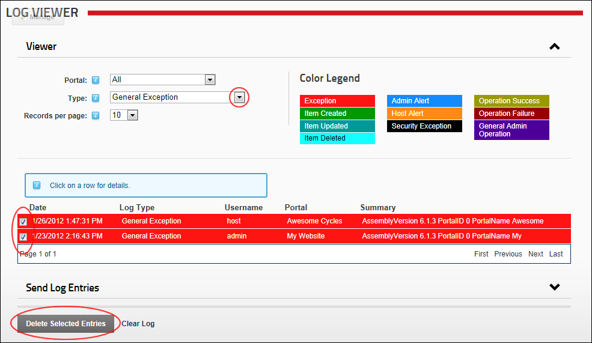

- Select All to view events from all sites.
- Select a site name to view events from that site only.
How to delete one or more logged event records from the Log Viewer module. Restricted to SuperUsers.

Deleting Selected Exceptions
One of the following messages will be displayed confirming whether the deletion was successful or not: